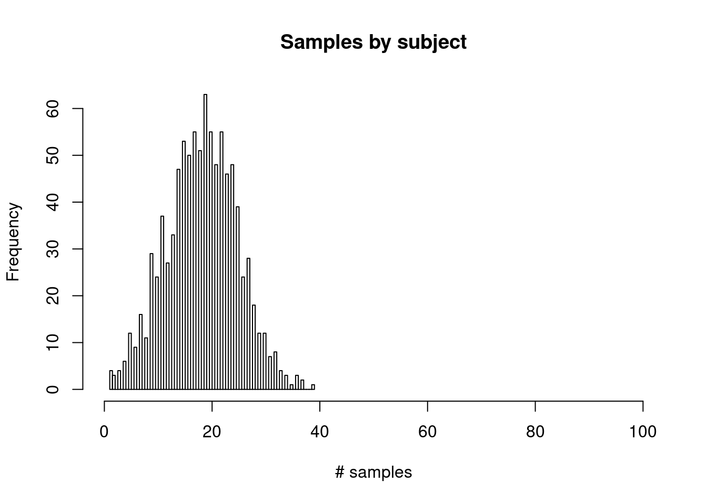
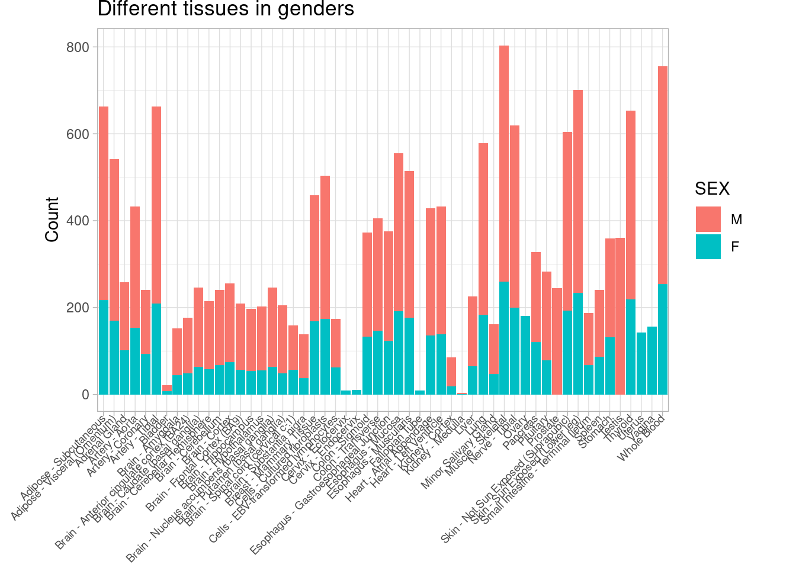
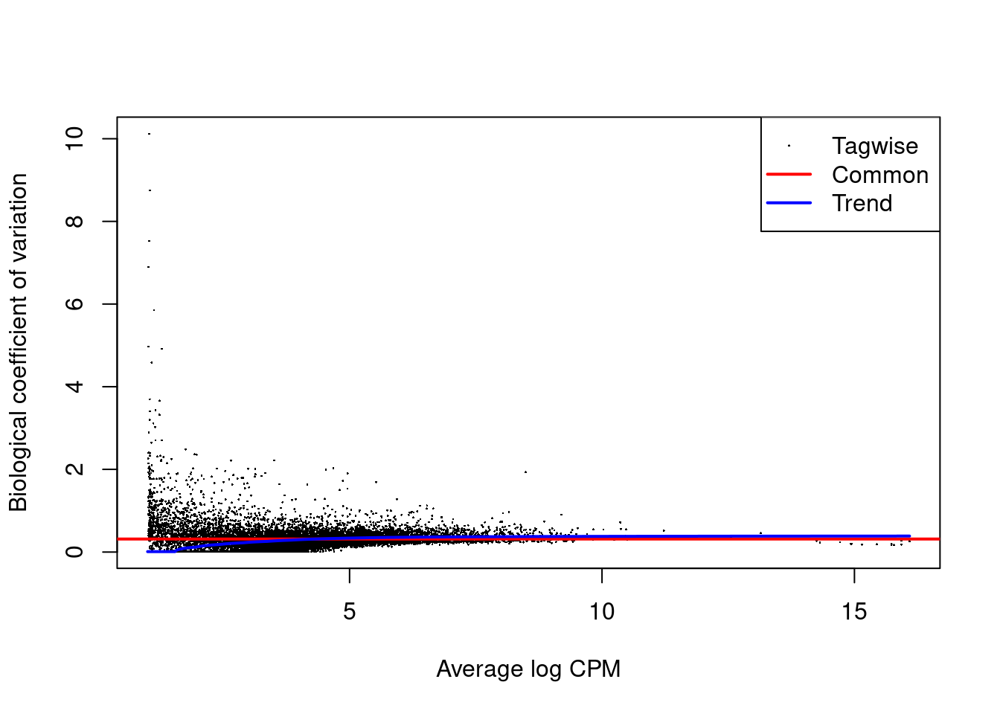
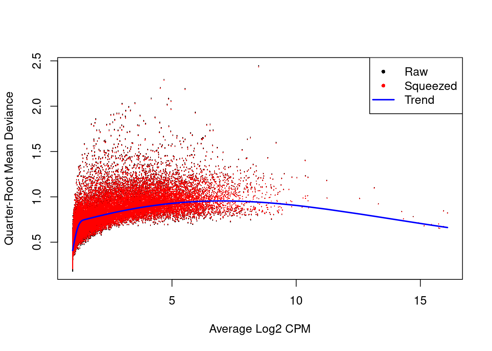
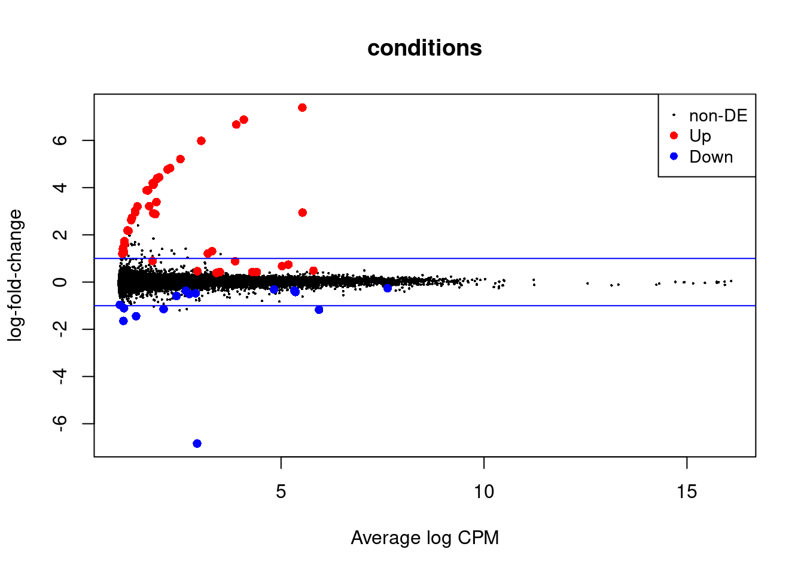
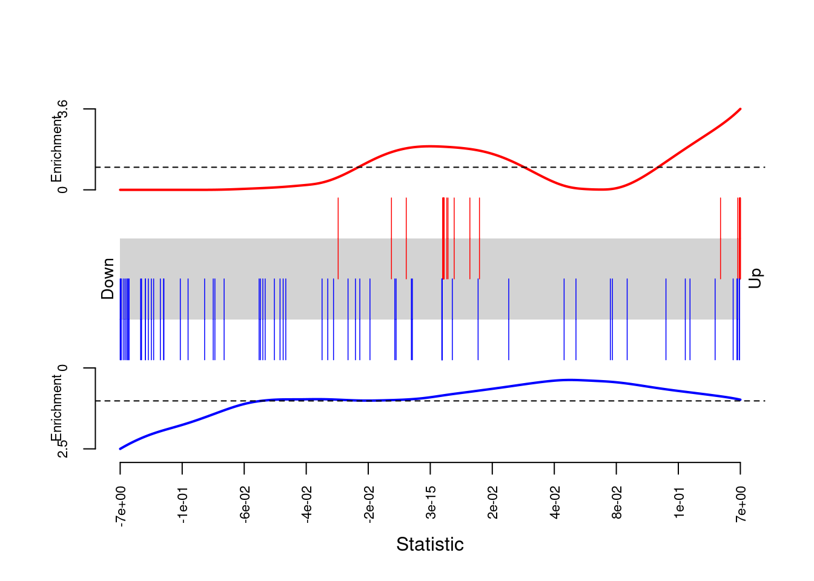
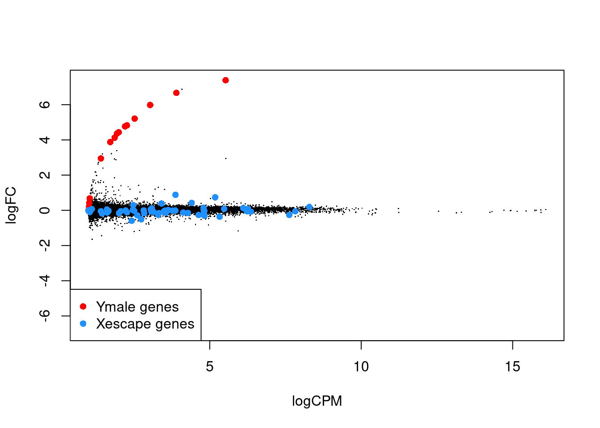

Annotation
samples <- fread(snakemake@input[["sampleAnno"]])[SAMPID %in% colnames(dt_tpm)]
samples[, SUBJID:=sub('(^[^-]+-[^-]+)-(.*)$', '\\1', samples$SAMPID)] # key before the second dash
phenotypes <- fread(snakemake@input[["phenotypeAnno"]])
anno <- merge(samples, phenotypes, by = "SUBJID", all.x = T)
genderlev <- factor(anno$SEX)
levels(genderlev) <- c("M", "F")
anno[, SEX:=genderlev]
How many males(=1) vs. females(=2)?
table(anno$SEX)
##
## M F
## 11584 5798
How many samples by subject?
hist(anno[, .N, by = "SUBJID"]$N, main = "Samples by subject", xlab = "# samples", xlim = c(0, 100), breaks = 100)

anno[, .N, by = "SUBJID"][N>100,]
## # A tibble: 0 x 2
## # … with 2 variables: SUBJID <chr>, N <int>
What’s the difference between gene counts and gene tpm datasets?
dt_tpm[2,5]
## # A tibble: 1 x 1
## `GTEX-1117F-0526-SM-5EGHJ`
## <dbl>
## 1 7.35
-> difference in file size is only because of integer vs. float capacity ## Gender sample differences How many samples for each tissue in male vs. female?
tissueBySex <- anno[, .N, by = list(SMTSD, SEX)]
ggplot(tissueBySex, aes(x = SMTSD, y = N, fill = SEX)) + geom_bar(stat = "identity") +
labs(title = "Different tissues in genders",x = "", y = "Count") +
theme_light() +
theme(
plot.margin = margin(0, 1, 1.2, 1, "cm"),
axis.text.x = element_text(face="plain",
size=7, angle=45, hjust = 1, vjust = 0.5,
margin = margin(-1.7, 0, 0, 0, "cm")))

Which tissues do only females have?
setdiff(tissueBySex[SEX=="F",SMTSD], tissueBySex[SEX=="M",SMTSD])
## [1] "Uterus" "Vagina" "Ovary"
## [4] "Cervix - Ectocervix" "Fallopian Tube" "Cervix - Endocervix"
setdiff(tissueBySex[SEX=="M",SMTSD], tissueBySex[SEX=="F",SMTSD])
## [1] "Prostate" "Testis"
nrow(anno[is.na(SMTSD),]) == 0
## [1] TRUE
commonTissuesAnno <- anno[SMTSD %in%
intersect(tissueBySex[SEX=="F",SMTSD], tissueBySex[SEX=="M",SMTSD]), ]
Analysis of brain cortex differences
maleTissIdx <- anno[SMTSD == "Brain - Cortex" & SEX == "M", SAMPID]
femTissIdx <- anno[SMTSD == "Brain - Cortex" & SEX == "F", SAMPID]
X <- cbind(dt_tpm[, ..femTissIdx], dt_tpm[, ..maleTissIdx]) %>% as.matrix
# TODO remove all zero rows
fit glm with edgeR
conditions <- c(rep(0, length(femTissIdx)), rep(1, length(maleTissIdx)))
data(annotEnsembl63)
geneAnno <- annotEnsembl63[,c("Symbol","Chr")] # TODO change to more recent/biomaRt?
geneEnsIds <- tstrsplit(dt_tpm$Name,"\\.")[[1]]
y <- DGEList(counts = X, group = conditions, genes = geneAnno[geneEnsIds,])
design <- model.matrix(~conditions) # design of DE analysis
y <- estimateDisp(y, design = design)
plotBCV(y)

fit <- glmQLFit(y, design = design)
plotQLDisp(fit)

qlf <- glmQLFTest(fit)
tt <- topTags(qlf, adjust.method = "BH", p.value = 0.05, n = nrow(counts))
deGeneRows <- rownames(tt) %>% as.numeric
diffGenes <- dt_tpm[deGeneRows, Name]
diffTable <- data.table(tt$table)[,ENS_ID:=diffGenes]
cols <- colnames(diffTable)[3:5]
diffTable[,(cols):=round(.SD, 5), .SDcols = cols]
#DT::datatable(diffTable) # visual table for the server
summary(decideTests(qlf))
## conditions
## Down 15
## NotSig 56140
## Up 45
plotMD(qlf)
abline(h = c(-1, 1), col = "blue")

get enriched GO/KEGG categories with limma
go <- goana(qlf)
goCat <- topGO(go, ont="BP", sort="Up", n=100, truncate=100) %>% as.data.table
cols <- c("P.Up", "P.Down")
#DT::datatable(goCat[P.Up < 0.05 | P.Down < 0.05,(cols):=round(.SD, 5), .SDcols = cols])
kegg <- kegga(qlf)
keggCat <- topKEGG(kegg, sort = "Up")
data(genderGenes)
as it seems no big differential hits on categories ## Compare DE genes to already known Y-specific/X-escaping(=female specific) genes
data("genderGenes")
Ymale <- geneEnsIds %in% msYgenes
Xescape <- geneEnsIds %in% XiEgenes
index <- list(Y=Ymale, X=Xescape)
fry(y, index=index, design = design) # limma gene set rotation tests
## # A tibble: 2 x 6
## NGenes Direction PValue FDR PValue.Mixed FDR.Mixed
## <int> <fct> <dbl> <dbl> <dbl> <dbl>
## 1 30 Up 1.45e-112 2.90e-112 2.15e-16 4.30e-16
## 2 67 Down 2.28e- 2 2.28e- 2 3.14e-11 3.14e-11
barcodeplot(qlf$table$logFC, index[[1]], index[[2]])

red is women, blue is men
with(qlf$table, plot(logCPM,logFC,pch=16,cex=0.2))
with(qlf$table, points(logCPM[Ymale],logFC[Ymale],pch=16,col="red"))
with(qlf$table, points(logCPM[Xescape],logFC[Xescape],pch=16,col="dodgerblue"))
legend("bottomleft",legend=c("Ymale genes","Xescape genes"),
pch=16,col=c("red","dodgerblue"))

IyctLS0KIycgdGl0bGU6IENvbXBhcmUgYnJhaW4gY29ydGV4CiMnIGF1dGhvcjogU3RlZmFuIER2b3JldHNraWkKIycgd2I6CiMnICBpbnB1dDoKIycgIC0gY291bnRzOiAiZGF0YS9HVEV4X0FuYWx5c2lzXzIwMTctMDYtMDVfdjhfUk5BU2VRQ3YxLjEuOV9nZW5lX3JlYWRzLmdjdC5neiIKIycgIC0gY291bnRzVHBtOiAiZGF0YS9HVEV4X0FuYWx5c2lzXzIwMTctMDYtMDVfdjhfUk5BU2VRQ3YxLjEuOV9nZW5lX3RwbS5nY3QuZ3oiCiMnICAtIHNhbXBsZUFubm86ICJkYXRhL0dURXhfQW5hbHlzaXNfdjhfQW5ub3RhdGlvbnNfU2FtcGxlQXR0cmlidXRlc0RTLnR4dCIKIycgIC0gcGhlbm90eXBlQW5ubzogImRhdGEvR1RFeF9BbmFseXNpc192OF9Bbm5vdGF0aW9uc19TdWJqZWN0UGhlbm90eXBlc0RTLnR4dCIKIycgb3V0cHV0OgojJyAgaHRtbF9kb2N1bWVudDoKIycgICBjb2RlX2ZvbGRpbmc6IHNob3cKIycgICBjb2RlX2Rvd25sb2FkOiBUUlVFCiMnLS0tCgpzb3VyY2UoJy53QnVpbGQvd0J1aWxkUGFyc2VyLlInKQpwYXJzZVdCSGVhZGVyKCJTY3JpcHRzL2dlbmVDb3VudHNUYWJsZS5SIikKCgpzZXR3ZCgifi9wcm9qZWN0cy9HVEV4QW5hLyIpCmxpYnJhcnkoZGF0YS50YWJsZSkKbGlicmFyeShnZ3Bsb3QyKQpsaWJyYXJ5KE1BU1MpCmxpYnJhcnkobWFncml0dHIpCmxpYnJhcnkoZWRnZVIpCmxpYnJhcnkodHdlZURFc2VxQ291bnREYXRhKQpsaWJyYXJ5KERUKQoKIycgV29ya3Mgb25seSBmb3IgaW50ZWdlciBjb3VudHMhCiMnCiMnIEBwYXJhbSBjb3VudHMgCiMnIEBwYXJhbSBjb25kaXRpb25zIAojJwojJyBAcmV0dXJuCiMnIEBleHBvcnQKIycKIycgQGV4YW1wbGVzCmZpdGdsbSA8LSBmdW5jdGlvbihjb3VudHMsIGNvbmRpdGlvbnMpIHsKICBwLnZhbHVlcyA8LSBhcHBseShjb3VudHMsIDEsIGZ1bmN0aW9uKHJvdykgewogICAgZ2VuZURhdGEgPC0gZGF0YS5mcmFtZShjb3VudCA9IGFzLm51bWVyaWMocm93KSwgY29uZGl0aW9uID0gY29uZGl0aW9ucykKICAgIG1vZGVsIDwtIHN1cHByZXNzV2FybmluZ3MoZ2xtLm5iKGNvdW50IH4gY29uZGl0aW9uLCBkYXRhID0gZ2VuZURhdGEpKQogICAgY29uZGl0aW9uRkMgPC0gKHN1bW1hcnkobW9kZWwpICU+JSBjb2VmKVssIDNdWzJdCiAgICAyKigxIC0gcG5vcm0oY29uZGl0aW9uRkMgJT4lIGFicykpICU+JSBhcy5udW1lcmljCiAgfQogICkKICBwLnZhbHVlcwp9CgojJyAjIyBSZWFkIGluIHRoZSBkYXRhCgojZHQgPC0gZnJlYWQoY21kID0gcGFzdGUwKCJ6Y2F0IDwgIiwgc25ha2VtYWtlQGlucHV0W1siY291bnRzIl1dKSkKZHRfdHBtIDwtIGZyZWFkKGNtZCA9IHBhc3RlMCgiemNhdCA8ICIsIHNuYWtlbWFrZUBpbnB1dFtbImNvdW50c1RwbSJdXSkpCgojJyAjIyBBbm5vdGF0aW9uCgpzYW1wbGVzIDwtIGZyZWFkKHNuYWtlbWFrZUBpbnB1dFtbInNhbXBsZUFubm8iXV0pW1NBTVBJRCAlaW4lIGNvbG5hbWVzKGR0X3RwbSldCnNhbXBsZXNbLCBTVUJKSUQ6PXN1YignKF5bXi1dKy1bXi1dKyktKC4qKSQnLCAnXFwxJywgc2FtcGxlcyRTQU1QSUQpXSAjIGtleSBiZWZvcmUgdGhlIHNlY29uZCBkYXNoCnBoZW5vdHlwZXMgPC0gZnJlYWQoc25ha2VtYWtlQGlucHV0W1sicGhlbm90eXBlQW5ubyJdXSkKYW5ubyA8LSBtZXJnZShzYW1wbGVzLCBwaGVub3R5cGVzLCBieSA9ICJTVUJKSUQiLCBhbGwueCA9IFQpCmdlbmRlcmxldiA8LSBmYWN0b3IoYW5ubyRTRVgpCmxldmVscyhnZW5kZXJsZXYpIDwtIGMoIk0iLCAiRiIpCmFubm9bLCBTRVg6PWdlbmRlcmxldl0gCgojJyBIb3cgbWFueSBtYWxlcyg9MSkgdnMuIGZlbWFsZXMoPTIpPwp0YWJsZShhbm5vJFNFWCkKCiMnIEhvdyBtYW55IHNhbXBsZXMgYnkgc3ViamVjdD8KaGlzdChhbm5vWywgLk4sIGJ5ID0gIlNVQkpJRCJdJE4sIG1haW4gPSAiU2FtcGxlcyBieSBzdWJqZWN0IiwgeGxhYiA9ICIjIHNhbXBsZXMiLCB4bGltID0gYygwLCAxMDApLCBicmVha3MgPSAxMDApCmFubm9bLCAuTiwgYnkgPSAiU1VCSklEIl1bTj4xMDAsXQoKIycgV2hhdCdzIHRoZSBkaWZmZXJlbmNlIGJldHdlZW4gZ2VuZSBjb3VudHMgYW5kIGdlbmUgdHBtIGRhdGFzZXRzPwpkdF90cG1bMiw1XQojJyAtPiBkaWZmZXJlbmNlIGluIGZpbGUgc2l6ZSBpcyBvbmx5IGJlY2F1c2Ugb2YgaW50ZWdlciB2cy4gZmxvYXQgY2FwYWNpdHkKCiMnICMjIEdlbmRlciBzYW1wbGUgZGlmZmVyZW5jZXMgCiMnIEhvdyBtYW55IHNhbXBsZXMgZm9yIGVhY2ggdGlzc3VlIGluIG1hbGUgdnMuIGZlbWFsZT8gCgp0aXNzdWVCeVNleCA8LSBhbm5vWywgLk4sIGJ5ID0gbGlzdChTTVRTRCwgU0VYKV0KZ2dwbG90KHRpc3N1ZUJ5U2V4LCBhZXMoeCA9IFNNVFNELCB5ID0gTiwgZmlsbCA9IFNFWCkpICsgZ2VvbV9iYXIoc3RhdCA9ICJpZGVudGl0eSIpICsKICBsYWJzKHRpdGxlID0gIkRpZmZlcmVudCB0aXNzdWVzIGluIGdlbmRlcnMiLHggPSAiIiwgeSA9ICJDb3VudCIpICsgCiAgdGhlbWVfbGlnaHQoKSArCiAgdGhlbWUoCiAgICBwbG90Lm1hcmdpbiA9IG1hcmdpbigwLCAxLCAxLjIsIDEsICJjbSIpLCAKICAgIGF4aXMudGV4dC54ID0gZWxlbWVudF90ZXh0KGZhY2U9InBsYWluIiwgCiAgICAgICAgICAgICAgICAgICAgICAgICAgICAgICAgIHNpemU9NywgYW5nbGU9NDUsIGhqdXN0ID0gMSwgdmp1c3QgPSAwLjUsCiAgICAgICAgICAgICAgICAgICAgICAgICAgICAgICAgIG1hcmdpbiA9IG1hcmdpbigtMS43LCAwLCAwLCAwLCAiY20iKSkpCgojJyBXaGljaCB0aXNzdWVzIGRvIG9ubHkgZmVtYWxlcyBoYXZlPyAKc2V0ZGlmZih0aXNzdWVCeVNleFtTRVg9PSJGIixTTVRTRF0sIHRpc3N1ZUJ5U2V4W1NFWD09Ik0iLFNNVFNEXSkKc2V0ZGlmZih0aXNzdWVCeVNleFtTRVg9PSJNIixTTVRTRF0sIHRpc3N1ZUJ5U2V4W1NFWD09IkYiLFNNVFNEXSkKCm5yb3coYW5ub1tpcy5uYShTTVRTRCksXSkgPT0gMApjb21tb25UaXNzdWVzQW5ubyA8LSBhbm5vW1NNVFNEICVpbiUgCiAgICAgICAgICAgICAgICAgICAgICAgICAgICBpbnRlcnNlY3QodGlzc3VlQnlTZXhbU0VYPT0iRiIsU01UU0RdLCB0aXNzdWVCeVNleFtTRVg9PSJNIixTTVRTRF0pLCBdCgojJyAjIyMgQW5hbHlzaXMgb2YgYnJhaW4gY29ydGV4IGRpZmZlcmVuY2VzCgptYWxlVGlzc0lkeCA8LSBhbm5vW1NNVFNEID09ICJCcmFpbiAtIENvcnRleCIgJiBTRVggPT0gIk0iLCBTQU1QSURdCmZlbVRpc3NJZHggPC0gYW5ub1tTTVRTRCA9PSAiQnJhaW4gLSBDb3J0ZXgiICYgU0VYID09ICJGIiwgU0FNUElEXQoKWCA8LSBjYmluZChkdF90cG1bLCAuLmZlbVRpc3NJZHhdLCBkdF90cG1bLCAuLm1hbGVUaXNzSWR4XSkgJT4lIGFzLm1hdHJpeAojIFRPRE8gcmVtb3ZlIGFsbCB6ZXJvIHJvd3MKCiMnIGZpdCBnbG0gd2l0aCBlZGdlUgoKY29uZGl0aW9ucyA8LSBjKHJlcCgwLCBsZW5ndGgoZmVtVGlzc0lkeCkpLCByZXAoMSwgbGVuZ3RoKG1hbGVUaXNzSWR4KSkpCgpkYXRhKGFubm90RW5zZW1ibDYzKQpnZW5lQW5ubyA8LSBhbm5vdEVuc2VtYmw2M1ssYygiU3ltYm9sIiwiQ2hyIildICMgVE9ETyBjaGFuZ2UgdG8gbW9yZSByZWNlbnQvYmlvbWFSdD8KCmdlbmVFbnNJZHMgPC0gdHN0cnNwbGl0KGR0X3RwbSROYW1lLCJcXC4iKVtbMV1dCnkgPC0gREdFTGlzdChjb3VudHMgPSBYLCBncm91cCA9IGNvbmRpdGlvbnMsIGdlbmVzID0gZ2VuZUFubm9bZ2VuZUVuc0lkcyxdKQpkZXNpZ24gPC0gbW9kZWwubWF0cml4KH5jb25kaXRpb25zKSAjIGRlc2lnbiBvZiBERSBhbmFseXNpcwoKeSA8LSBlc3RpbWF0ZURpc3AoeSwgZGVzaWduID0gZGVzaWduKQpwbG90QkNWKHkpCmZpdCA8LSBnbG1RTEZpdCh5LCBkZXNpZ24gPSBkZXNpZ24pCnBsb3RRTERpc3AoZml0KQpxbGYgPC0gZ2xtUUxGVGVzdChmaXQpCnR0IDwtIHRvcFRhZ3MocWxmLCBhZGp1c3QubWV0aG9kID0gIkJIIiwgcC52YWx1ZSA9IDAuMDUsIG4gPSBucm93KGNvdW50cykpCgpkZUdlbmVSb3dzIDwtIHJvd25hbWVzKHR0KSAlPiUgYXMubnVtZXJpYwoKZGlmZkdlbmVzIDwtIGR0X3RwbVtkZUdlbmVSb3dzLCBOYW1lXQpkaWZmVGFibGUgPC0gZGF0YS50YWJsZSh0dCR0YWJsZSlbLEVOU19JRDo9ZGlmZkdlbmVzXQpjb2xzIDwtIGNvbG5hbWVzKGRpZmZUYWJsZSlbMzo1XQpkaWZmVGFibGVbLChjb2xzKTo9cm91bmQoLlNELCA1KSwgLlNEY29scyA9IGNvbHNdCiNEVDo6ZGF0YXRhYmxlKGRpZmZUYWJsZSkgIyB2aXN1YWwgdGFibGUgZm9yIHRoZSBzZXJ2ZXIKCnN1bW1hcnkoZGVjaWRlVGVzdHMocWxmKSkKcGxvdE1EKHFsZikKYWJsaW5lKGggPSBjKC0xLCAxKSwgY29sID0gImJsdWUiKQoKIycgZ2V0IGVucmljaGVkIEdPL0tFR0cgY2F0ZWdvcmllcyB3aXRoIGxpbW1hCmdvIDwtIGdvYW5hKHFsZikKZ29DYXQgPC0gdG9wR08oZ28sIG9udD0iQlAiLCBzb3J0PSJVcCIsIG49MTAwLCB0cnVuY2F0ZT0xMDApICU+JSBhcy5kYXRhLnRhYmxlCmNvbHMgPC0gYygiUC5VcCIsICJQLkRvd24iKQojRFQ6OmRhdGF0YWJsZShnb0NhdFtQLlVwIDwgMC4wNSB8IFAuRG93biA8IDAuMDUsKGNvbHMpOj1yb3VuZCguU0QsIDUpLCAuU0Rjb2xzID0gY29sc10pCmtlZ2cgPC0ga2VnZ2EocWxmKQprZWdnQ2F0IDwtIHRvcEtFR0coa2VnZywgc29ydCA9ICJVcCIpCmRhdGEoZ2VuZGVyR2VuZXMpCgojJyBhcyBpdCBzZWVtcyBubyBiaWcgZGlmZmVyZW50aWFsIGhpdHMgb24gY2F0ZWdvcmllcwoKIycgIyMgQ29tcGFyZSBERSBnZW5lcyB0byBhbHJlYWR5IGtub3duIFktc3BlY2lmaWMvWC1lc2NhcGluZyg9ZmVtYWxlIHNwZWNpZmljKSBnZW5lcwpkYXRhKCJnZW5kZXJHZW5lcyIpClltYWxlIDwtIGdlbmVFbnNJZHMgJWluJSBtc1lnZW5lcwpYZXNjYXBlIDwtIGdlbmVFbnNJZHMgJWluJSBYaUVnZW5lcwoKaW5kZXggPC0gbGlzdChZPVltYWxlLCBYPVhlc2NhcGUpCmZyeSh5LCBpbmRleD1pbmRleCwgZGVzaWduID0gZGVzaWduKSAjIGxpbW1hIGdlbmUgc2V0IHJvdGF0aW9uIHRlc3RzCmJhcmNvZGVwbG90KHFsZiR0YWJsZSRsb2dGQywgaW5kZXhbWzFdXSwgaW5kZXhbWzJdXSkKIycgcmVkIGlzIHdvbWVuLCBibHVlIGlzIG1lbgoKd2l0aChxbGYkdGFibGUsIHBsb3QobG9nQ1BNLGxvZ0ZDLHBjaD0xNixjZXg9MC4yKSkKd2l0aChxbGYkdGFibGUsIHBvaW50cyhsb2dDUE1bWW1hbGVdLGxvZ0ZDW1ltYWxlXSxwY2g9MTYsY29sPSJyZWQiKSkKd2l0aChxbGYkdGFibGUsIHBvaW50cyhsb2dDUE1bWGVzY2FwZV0sbG9nRkNbWGVzY2FwZV0scGNoPTE2LGNvbD0iZG9kZ2VyYmx1ZSIpKQpsZWdlbmQoImJvdHRvbWxlZnQiLGxlZ2VuZD1jKCJZbWFsZSBnZW5lcyIsIlhlc2NhcGUgZ2VuZXMiKSwKICAgICAgICAgICAgICAgICAgICAgICAgICAgICAgICAgICAgICAgICAgICAgICAgICAgICAgICAgcGNoPTE2LGNvbD1jKCJyZWQiLCJkb2RnZXJibHVlIikpCgo=